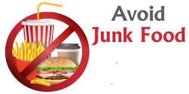

Why you should eat healthy food.

A healthy diet is essential for good health and nutrition. It protects you against many chronic noncommunicable diseases, such as heart disease, diabetes and cancer. Eating a variety of foods and consuming less salt, sugars and saturated and industrially-produced trans-fats, are essential for healthy diet.
Why you should not eat junk food.
Eating junk food on a regular basis can lead to an increased risk of obesity and chronic diseases like cardiovascular disease, type 2 diabetes, non-alcoholic fatty liver disease and some cancers.